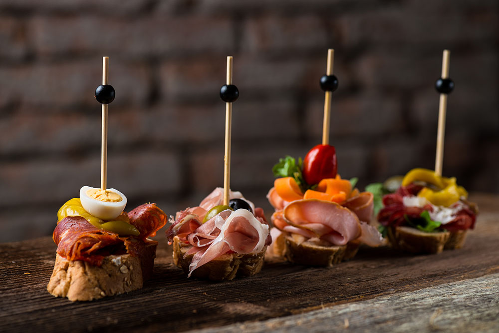
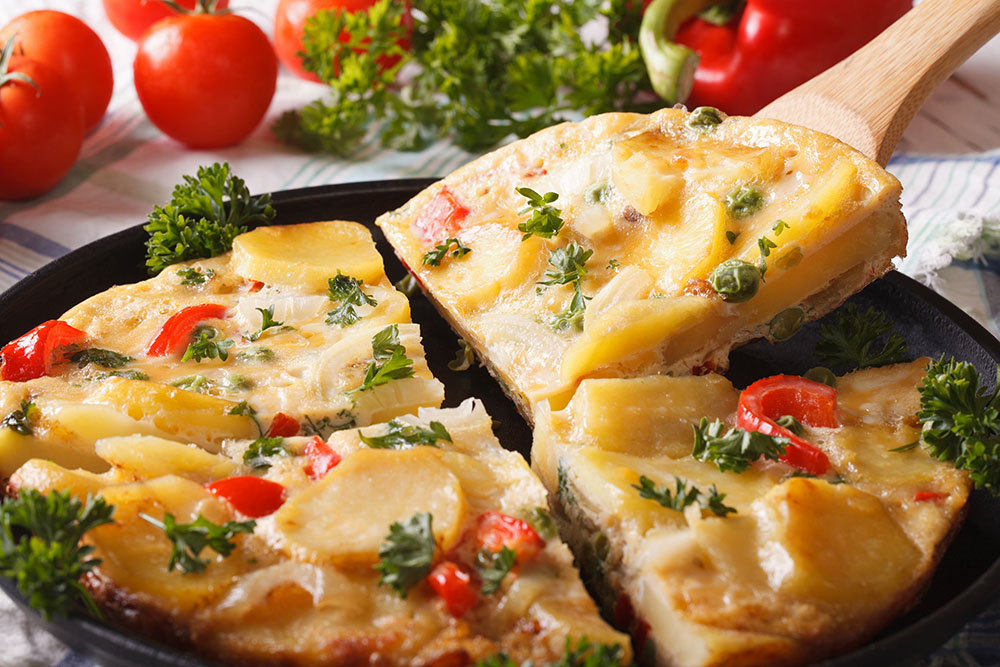
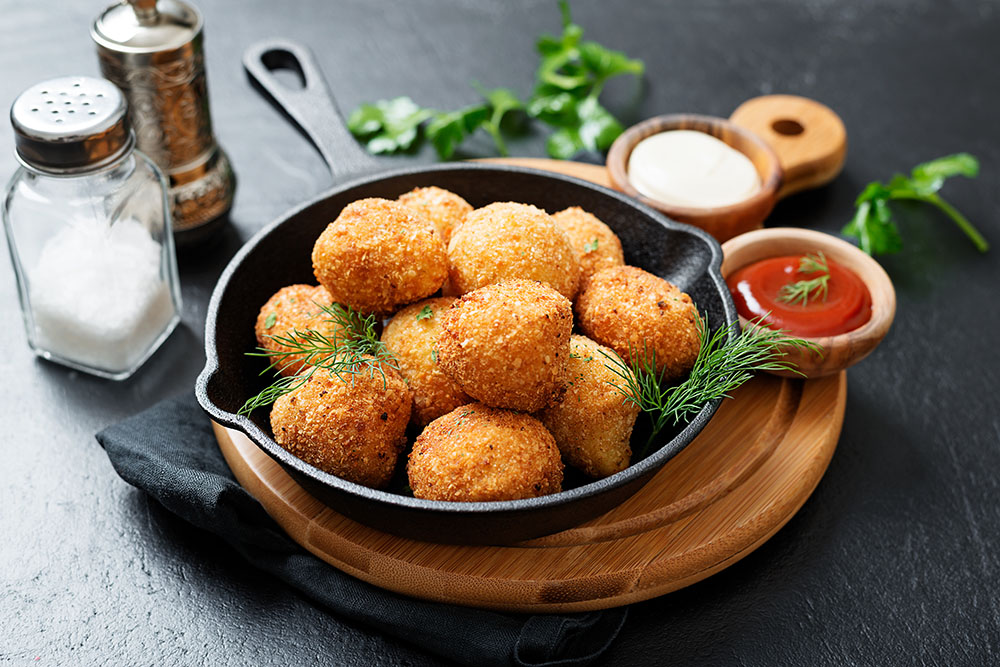
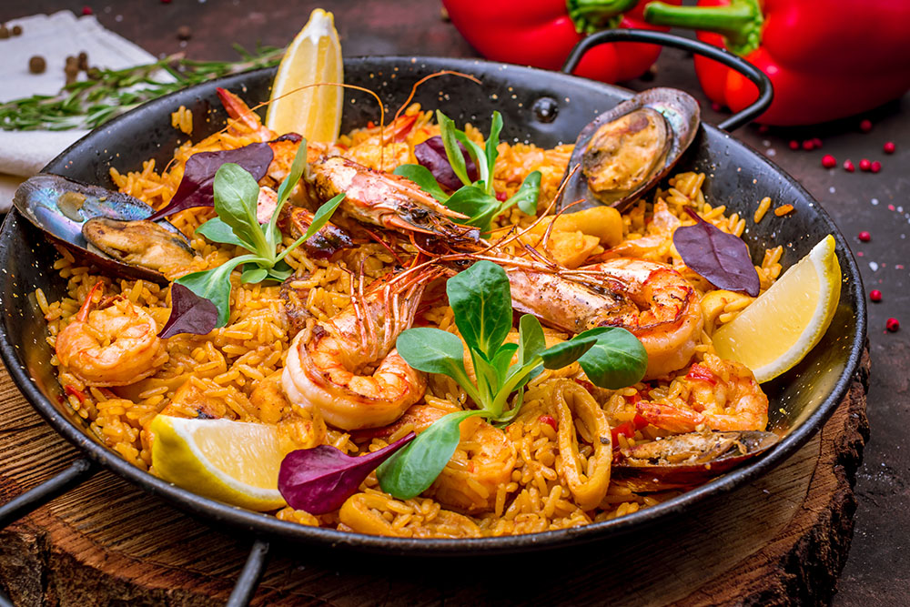
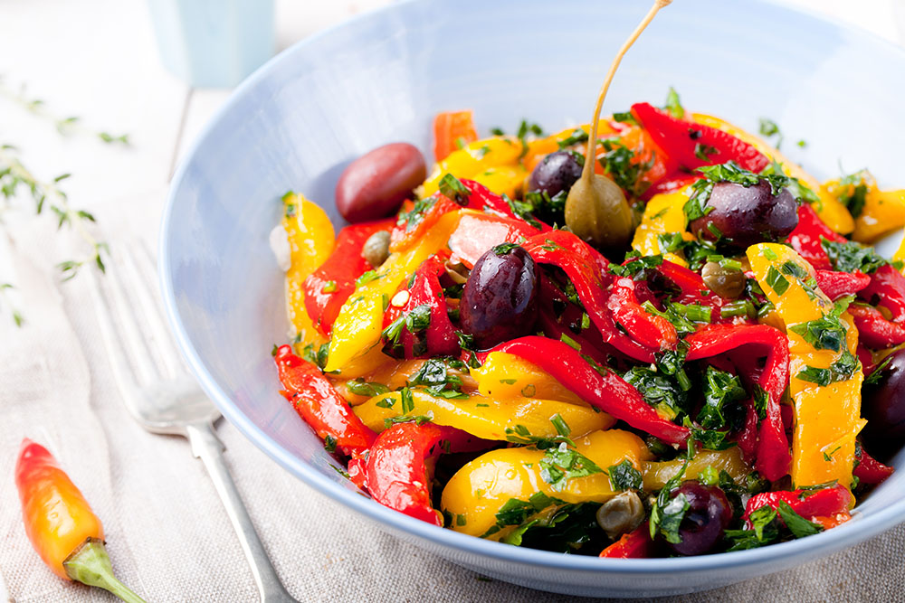
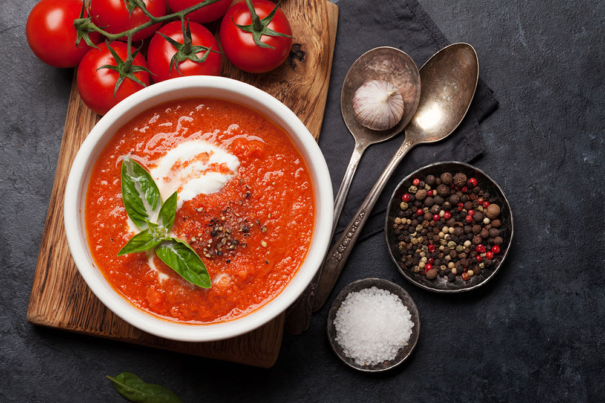

Food and wine are national obsessions in Spain, and with good reason. The touchstones of Spanish cooking are deceptively simple: incalculable variety, traditional recipes handed down through the generations, and an innate willingness to experiment and see what comes out of the kitchen laboratory.
| Dishes | The Details |
|---|---|
|  | Tapas go back a long way in Spanish history. Some argue they were an invention of Spanish King Alfonso X ‘The Wise’, who took small portions of food with a glass of wine between meals. The more widely accepted theory is that tapas originated as a snack for field workers during the long hours between breakfast and lunchtime. |
|  | You cannot dare leave without digging your fork into some tortilla espanola (Spanish omelette). It’s not a traditional thin omelette, but quite tall and sturdy. Eggs, potato and onion are combined, then fried on the stovetop. It’s the perfect energy snack, and doubles up as a great hangover cure. |
|  | Croquetas de jamón are small, lightly breaded and fried bechamel fritters that include delicious Spanish cured ham. They are a sure hit as an appetizer or an afternoon snack with a glass of beer or wine. These creamy fritters are a staple of the Spanish tapas scene, and you'll find them on offer throughout the country. |
|  | Paella is a traditional dish of Spain. Its home is Valencia, but variations exist in the different Spanish provinces. A colorful mixture of saffron-flavored rice and various meats, paella’s name comes from the paellera, the flat, round pan in which it is cooked. Traditionally, the paella is cooked out of doors, over a wood fire. |
|  | From crispy green lettuce to fresh fruit and creamy potato salad, Spaniards enjoy a wide variety of salads in the summertime. The best and tastiest salads for hot weather include a mix of salads, ranging from quick and easy to more complicated. All are super tasty and impart the flavors of Spain into your meal. |
|  | Gazpacho is an ancient dish mentioned in Greek and Roman literature. The most frequently encountered gazpacho is an uncooked mixture of tomatoes, garlic, olive oil, water, vinegar, onions, cucumbers, and green peppers, thickened with bread crumbs. The word gazpacho is derived from the Arabic for “soaked bread.” |